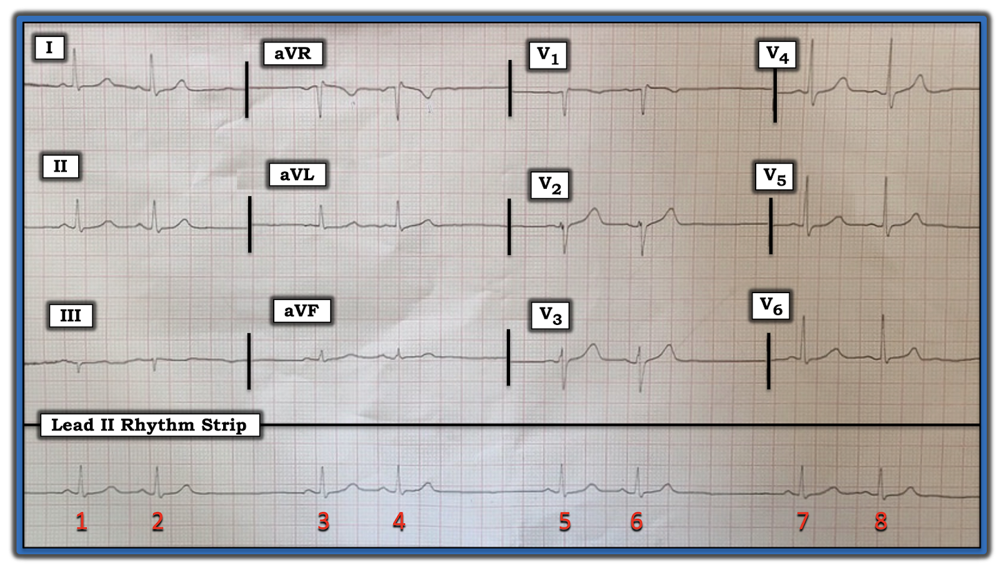
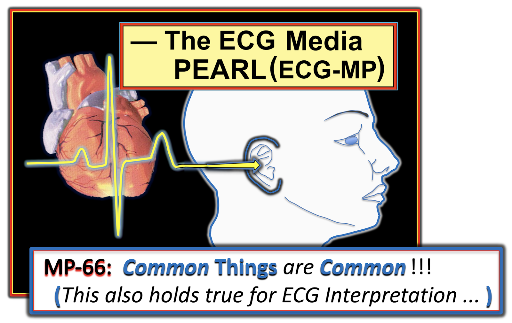
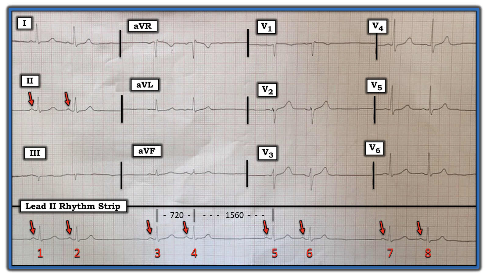
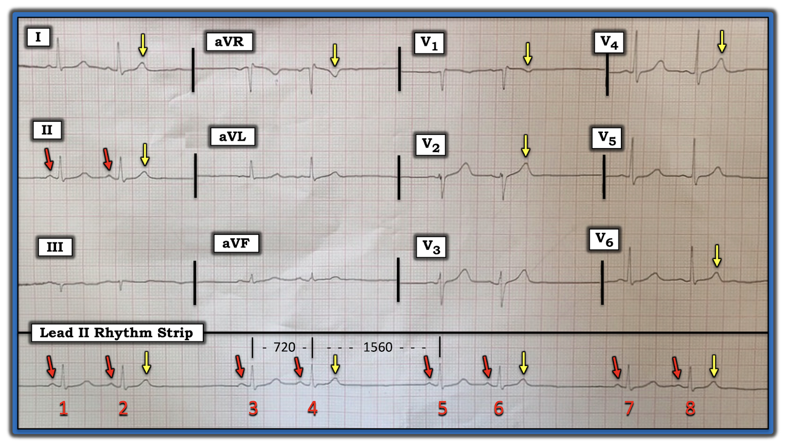

ECG Blog #252 — Mobitz I? Mobitz II? Hay không phải?
Điện tâm đồ ở Hình-1 được ghi từ một bệnh nhân trung niên được cho là có blốc AV tiến triển (advanced).
CÂU HỎI:
- Nhịp này là Mobitz I? — Mobitz II? — hay không phải cả hai?


— Ca bệnh tiếp tục BÊN DƯỚI Audio Pearl của hôm nay ... —
=======================================
LƯU Ý: Đến đây, một số bạn đọc có thể muốn nghe ECG Audio PEARL dài 11:15 phút trước khi đọc Suy nghĩ của tôi về điện tâm đồ ở Hình-1. Bạn có thể tham khảo Suy nghĩ của tôi về bản ghi này bất cứ lúc nào (nằm bên dưới ECG MP-66).
=======================================


ECG Media PEARL #66 (11:15 phút Audio) của hôm nay — Đi sâu vào chủ đề "Chuyện thường gặp thì hay gặp" (Common Things are Common). Bản ghi âm này chứa đầy ĐIỂM THEN CHỐT (PEARLS) giúp nhanh chóng nhận ra PAC bị blốc — cuồng nhĩ — rung nhĩ — VT — blốc AV độ 2 Mobitz I so với Mobitz II — blốc phân nhánh trái trước so với trái sau — và SSS (hội chứng suy nút xoang — Sick Sinus Syndrome).
Cách tiếp cận tuần tự của tôi với ca bệnh hôm nay:
Rất dễ bị cám dỗ khi nhìn nhịp ở Hình-1 — và lập tức nghi ngờ một dạng blốc AV độ 2 nào đó. Tôi sẽ đề xuất một cách tiếp cận khác!
- Ấn tượng thứ 1 của tôi khi nhìn dải nhịp chuyển đạo II dài trên bản ghi hôm nay là có nhịp theo nhóm (group beating) theo một kiểu nhịp đôi (bigeminal pattern) trên thất (tức QRS hẹp)!
ĐIỂM THEN CHỐT (PEARL) #1: Như đã bàn trong ECG Blog #232 — khi nhận ra một kiểu nhịp đôi trên thất mà nhát thứ 1 của mỗi cặp được dẫn truyền, cần nghĩ tới chẩn đoán phân biệt sau đây:
- Nhịp xoang kèm nhịp đôi nhĩ hoặc nhịp đôi bộ nối (tức cứ cách một nhát lại có một PAC hoặc PJC).
- Nhịp xoang kèm nhịp ba nhĩ — trong đó cứ sóng P thứ ba là một PAC "bị blốc" (không dẫn truyền).
- Một dạng blốc SA ( = blốc xoang nhĩ — Sino-Atrial) nào đó.
- Blốc AV độ 2 Mobitz I ( = Wenckebach AV) với dẫn truyền AV 3:2.
- Blốc AV độ 2 Mobitz II.
ĐIỂM THEN CHỐT (PEARL) #2: Một cách nhìn khác về kiểu nhịp theo nhóm dạng nhịp đôi mà ta thấy ở Hình-1 — là mỗi nhóm 2 nhát được ngăn cách bởi một khoảng ngưng ngắn.
- Như đã nhấn mạnh ở Audio Pearl hôm nay bên trên — cho đến nay, nguyên nhân thường gặp nhất gây khoảng ngưng là một PAC bị blốc (blocked PAC). Trong thực hành lâm sàng — PAC bị blốc gặp nhiều hơn hẳn so với bất kỳ dạng blốc AV nào.
- Vì vậy — chỉ trong vài giây khi nhìn bản ghi hôm nay — tôi đã nghĩ rằng về mặt thống kê, nguyên nhân có khả năng nhất gây các khoảng ngưng ở Hình-1 là PAC bị blốc. Do đó — tôi biết rằng việc đánh giá của mình cần tập trung vào xác nhận hoặc loại trừ khả năng này.
Đến đây, tôi xem xét nhịp kỹ hơn — áp dụng cách tiếp cận hệ thống Ps, Qs và 3Rs (như đã bàn chi tiết trong ECG Blog #185):
- Sóng P — có hiện diện (các mũi tên ĐỎ ở Hình-2 đánh dấu các sóng P xoang dương ở chuyển đạo II).
- Phức bộ QRS hẹp — xác nhận rằng nhịp là trên thất.
- Nhịp ở Hình-2 không "đều (Regular)" — nên tần số (Rate) thay đổi. Dù vậy — có nhịp theo nhóm, với kiểu lặp lại của các khoảng ngắn-dài xen kẽ. Sóng P có liên quan (Related) với các phức bộ QRS lân cận — ở chỗ mỗi phức bộ QRS trên bản ghi này đều có một sóng P xoang đi trước với khoảng PR cố định.


ĐIỂM THEN CHỐT (PEARL) #3: Giờ đây khi đã đánh giá có hệ thống 5 thông số trong cách tiếp cận Ps, Qs & 3R — đã đến lúc xem xét các bệnh cảnh trong chẩn đoán phân biệt mà chúng ta đã đưa ra trước đó ở Pearl #1.
- Nhịp ở Hình-2 không phải blốc AV độ 2 Mobitz I cũng không phải Mobitz II. Lý do ta có thể dễ dàng loại trừ blốc AV độ 2 — là vì nhịp nhĩ không đều! (các mũi tên ĐỎ ở Hình-2). Trừ một số ngoại lệ hiếm gặp, để có blốc AV — khoảng P-P phải ít nhất là tương đối đều, và điều này chắc chắn không đúng với bản ghi này. Tức là — không thấy sóng P nào ở gần điểm giữa của mỗi khoảng ngưng, như ta sẽ mong đợi nếu có một dạng blốc AV độ 2 nào đó.
- Các lý do khác cho thấy dạng blốc AV độ 2 thường gặp nhất ( = Mobitz I) không có mặt ở Hình-2 là: i) Khoảng PR không tăng dần: — và, ii) Tính chu kỳ Wenckebach không hiện diện (tức khoảng ngưng [1560 msec.] không ngắn hơn hai lần khoảng R-R ngắn nhất [720 msec.] — như đã bàn trong ECG Blog #164).
- Nhịp ở Hình-2 không phải nhịp đôi nhĩ cũng không phải nhịp đôi bộ nối — vì các sóng P xoang trông giống nhau với khoảng PR không đổi đi trước mỗi phức bộ QRS trên bản ghi. Hình dạng sóng P đi trước các nhát #2, 4, 6 và 8 lẽ ra phải trông khác đi nếu có nhịp đôi nhĩ hoặc nhịp đôi bộ nối.
- Blốc SA ít có khả năng vì: i) Theo kinh nghiệm của tôi — rối loạn dẫn truyền này cực kỳ hiếm gặp trong thực hành lâm sàng; — và, ii) Phải có tính chu kỳ Wenckebach NẾU là blốc SA loại I — và — các khoảng R-R dài hơn ở Hình-2 phải gần như đúng bằng hai lần độ dài các khoảng R-R ngắn hơn nếu là blốc SA loại II (mà 1560 msec. rõ ràng lớn hơn 2 X 720 msec.).
- Bằng phương pháp loại trừ — giờ ta có thể tập trung xác định LIỆU nguyên nhân của nhịp theo nhóm ở Hình-2 có thực sự là do PAC bị blốc hay không.
CÁCH đánh giá khả năng có PAC bị blốc:
Như đã nhấn mạnh ở Audio Pearl hôm nay bên trên — nguyên nhân thường gặp nhất gây khoảng ngưng là một PAC bị blốc (blocked PAC). Đôi khi (các) PAC bị blốc sẽ rất rõ ràng — và đôi khi thì không. Dù vậy — tôi bảo đảm rằng một khi bạn bắt đầu thường xuyên tìm PAC bị blốc, bạn sẽ bắt đầu thấy chúng thường xuyên đến bất ngờ!
- MẤU CHỐT để nhận ra một dấu hiệu điện tâm đồ cụ thể — là biết khi nào cần tìm nó. Bí quyết là tìm PAC bị blốc bất cứ khi nào bạn gặp bất kỳ khoảng ngưng bất ngờ nào trong nhịp.
- CÁCH tìm: Xem xét kỹ đoạn ST và sóng T ở đầu khoảng ngưng. So sánh đoạn ST và sóng T ở đầu khoảng ngưng này — với sóng ST-T của tất cả các nhát xoang dẫn truyền bình thường trên bản ghi. Có khác biệt gì không?
- LƯU Ý: Phát hiện PAC bị blốc có thể khó! Ta phải phân biệt giữa những biến đổi nhỏ xảy ra tự nhiên từ nhát này sang nhát khác ở sóng ST-T — với những khía hay chỗ lệch là hậu quả của một sóng P sớm bị vùi bên trong (và do đó làm biến dạng) sóng ST-T.
- NẾU còn nghi ngờ — hãy xem các chuyển đạo được ghi đồng thời! 12 chuyển đạo tốt hơn một! Đôi khi các dấu hiệu "tố cáo" một PAC không dẫn truyền bị ẩn chỉ thấy được ở một số (chứ không phải tất cả) chuyển đạo trên bản ghi 12 chuyển đạo.
- Để thực hành — có thể tìm các ví dụ về PAC bị blốc trong ECG Blog #33 — Blog #57 — Blog #66 — và Blog #147, cùng nhiều bài khác.
KẾT LUẬN của ca bệnh hôm nay:
Nhịp trong ca bệnh hôm nay cực kỳ tinh tế — vì các PAC bị blốc được ẩn giấu rất kỹ. Sóng ST-T "bình thường" xuất hiện sau nhát thứ 1 của mỗi cặp (tức các sóng ST-T của nhát #1, 3, 5 và 7 ở Hình-3).
- Tôi đã đánh dấu bằng mũi tên VÀNG những chuyển đạo trên bản ghi hôm nay mà sóng T có vẻ nhọn hơn rõ rệt so với sóng T bình thường đi trước nó. Có lẽ chuyển đạo dễ nhận ra khác biệt này nhất là ở nhát #5 và 6 trong chuyển đạo V1 — trong đó mũi tên VÀNG cho thấy rõ sóng T đảo ngược sâu hơn do PAC bị blốc, điều không có ở sóng T của nhát #5.
- Lý tưởng nhất, ta nên có thêm dữ liệu theo dõi trên bệnh nhân này để xác nhận hình dạng sóng ST-T "bình thường" ở từng chuyển đạo trong 12 chuyển đạo. Dù vậy, mặc dù mọi phức bộ QRS trên bản ghi này trông gần như giống hệt nhau — sóng T thứ 2 trong mỗi nhóm luôn trông hơi khác một chút so với sóng T thứ 1 ở nhiều chuyển đạo. Điều này ủng hộ mạnh mẽ nhận định của tôi rằng nhịp là nhịp ba nhĩ, trong đó cứ nhát thứ ba là một PAC bị blốc.
- Phần còn lại của điện tâm đồ 12 chuyển đạo này không có gì đáng chú ý. Không có thay đổi cấp tính.
- ĐIỀU CỐT LÕI: Bệnh nhân không có bất kỳ dạng blốc AV nào. Thay vào đó, nhịp là nhịp xoang — kèm nhịp ba nhĩ, trong đó mỗi PAC đều "bị blốc" (vì nó xảy ra rất sớm, trong thời kỳ trơ tuyệt đối). Về lâm sàng — cần chú ý đến các nguyên nhân có thể gây PAC (tức caffeine, rượu, mất nước, lo âu — hoặc các vấn đề bệnh lý nền khác) — nhưng nhìn chung, chẩn đoán nhịp này ít đáng lo ngại hơn nhiều so với trường hợp có blốc AV.


==================================
Lời cảm ơn: Xin cảm ơn Praneet Manekar (từ Amritsar, Ấn Độ) đã chia sẻ ca bệnh và bản ghi này.
==================================
Các bài ECG Blog liên quan đến ca bệnh hôm nay:
- ECG Blog #185 — Ôn lại cách tiếp cận Ps, Qs và 3R để đọc nhịp có hệ thống.
- ECG Blog #232 — Ôn lại khái niệm nhịp đôi (bigeminal rhythm; có thể do nhịp đôi nhĩ hoặc nhịp đôi thất, dẫn truyền Wenckebach — hoặc các nguyên nhân khác — Hãy nghe Audio Pearl #47).
- ECG Blog #164 — Ôn lại một ca blốc AV độ 2 Mobitz I, với phần bàn luận chi tiết về "Dấu chân" của Wenckebach.
- ECG Blog #33 — Ôn lại một ca có PAC bị blốc và PAC dẫn truyền lệch hướng.
- ECG Blog #66 — Ôn lại một ca có PAC bị blốc và PAC dẫn truyền lệch hướng.
- ECG Blog #147 — Ôn lại một ca có PAC bị blốc.
- ECG Blog #57 — Ôn lại một ca nhịp đôi nhĩ kèm PAC bị blốc.
Các bài ECG Blog liên quan đến AUDIO Pearl hôm nay:
- Bài đăng ngày 5 tháng 7 năm 2018 trên Dr. Smith's ECG Blog — (Xin xem bình luận của tôi ở cuối trang để ôn lại chẩn đoán điện tâm đồ hội chứng suy nút xoang (Sick Sinus Syndrome)).
- ECG Blog #196 — Trình bày "quan điểm của tôi" về đánh giá WCT (nhịp nhanh QRS rộng — Wide-Complex Tachycardia) đều — kèm các mẹo để phân biệt giữa VT với SVT kèm BBB có sẵn hoặc dẫn truyền lệch hướng.
- ECG Blog #220 — Ôn lại chẩn đoán phân biệt cho Danh sách #1: Các nguyên nhân gây nhịp WCT đều không có dấu hiệu rõ của hoạt động nhĩ (Media Pearl #37 trong bài này là một bản Audio ôn lại cách đánh giá để xác định LIỆU bệnh nhân có ổn định huyết động hay không).
- ECG Blog #164 — Ôn lại một ca blốc AV độ 2 Mobitz I, với phần bàn luận chi tiết về "Dấu chân" của Wenckebach.
- ECG Blog #236 — Ôn lại trong Video Pearl #52 dài 15 phút cách nhận biết các blốc AV độ 2 (bao gồm blốc AV "mức độ cao").
- ECG Blog #186 — Ôn lại khi nào nên nghi ngờ blốc AV độ 2, Mobitz loại I.
- ECG Blog #229 — Ôn lại cách phân biệt cuồng nhĩ (AFlutter) với nhịp nhanh nhĩ (ATach) (và TẠI SAO cuồng nhĩ lại thường bị bỏ sót đến vậy — Hãy nghe Audio Pearl #45).
- Bài đăng ngày 12 tháng 11 năm 2019 trên Dr. Smith's ECG Blog — Ôn lại một ca khác về nhịp SVT đều.
- Bài đăng ngày 16 tháng 10 năm 2019 trên Dr. Smith's ECG Blog — Bình luận của tôi (ở cuối trang) trình bày cách tiếp cận của tôi với một ca khác về nhịp SVT đều.
- ECG Blog #199 — Ôn lại chẩn đoán điện tâm đồ MAT (nhịp nhanh nhĩ đa ổ — Hãy xem Video Pearl #16).
- ECG Blog #203 — Ôn lại một cách tiếp cận "dễ dùng" với các blốc phân nhánh (LAHB/LPHB) và blốc hai phân nhánh — Hãy xem Video Pearl #21).